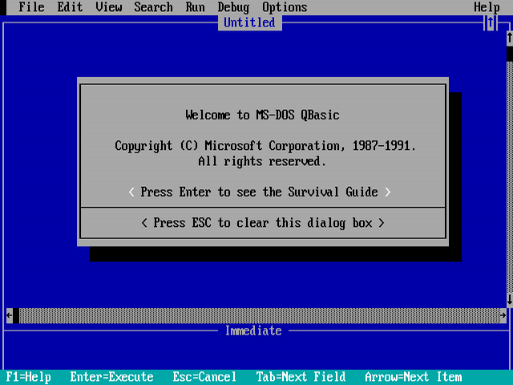

Started coding 21 years ago on QuickBasic:
The question, “What’s going to change in the next 10 years?” is a popular one in nearly all industries...
...you may forget to look at a simpler and more important question: “What’s not going to change in the next ten years?”
Jeff Bezos and Warren Buffett agree on this question being the more important of the two.
For the perishable, every additional day in its life translates into a shorter additional life expectancy. For the nonperishable, every additional day may imply a longer life expectancy. So the longer a technology lives, the longer it can be expected to live.
Nassim Taleb, Antifragile
def factorial(n):
result = 1
for i in range(1, n+1):
result *= i
return resulthttps://stackoverflow.blog/2017/09/06/incredible-growth-python/
SELECT name, inception, last_release, usage_2018
FROM technologies
WHERE name = 'SQL'
Or with Django ORM:
Technology.objects.filter(name='SQL')
int factorial(int n) {
int result = 1;
for (int i = 1; i <= n; ++i)
result *= i;
return result;
}os.forkcffi<!DOCTYPE html>
<html>
<head>
<title>This is a title</title>
</head>
<body>
<p>Hello world!</p>
</body>
</html>
1,546,708,222
= Saturday, 5 January 2019 17:10:22 UTC
IDENTIFICATION DIVISION.
FUNCTION-ID. factorial.
DATA DIVISION.
LOCAL-STORAGE SECTION.
01 i PIC 9(10).
LINKAGE SECTION.
01 n PIC 9(10).
01 ret PIC 9(10).
PROCEDURE DIVISION USING BY VALUE n RETURNING ret.
MOVE 1 TO ret
PERFORM VARYING i FROM 2 BY 1 UNTIL n < i
MULTIPLY i BY ret
END-PERFORM
GOBACK
.